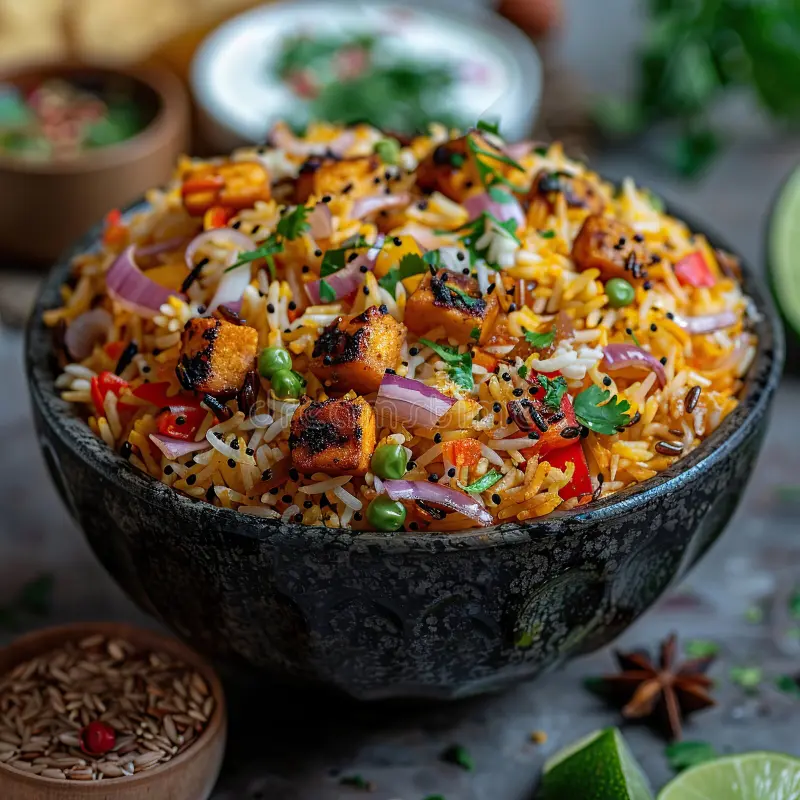

Top Indian Food Recipes
Table containing preparaton time , cook time , difficulty level, servings
| Recipe |
Preparation Time |
Cooking Time |
Difficulty Level |
Servings |
| Aromatic Biryani |
30 mins |
45 mins |
Medium |
1 bowl |
| Creamy Butter Chicken |
20 mins |
30 mins |
Easy |
1 plate |
| Crispy Masala Dosa |
10 mins |
20 mins |
Medium |
1 piece |
| Chhole Bhature |
15 mins |
40 mins |
Medium |
2 pieces |
| Special Samosa |
20 mins |
30 mins |
Medium |
2 pieces |
Aromatic Biryani

Biryani is a flavorful and aromatic rice dish that is
popular in Indian cuisine.It typically consists of basmati rice cooked with a variety of spices, herbs, and
either meat (such as chicken, mutton, or fish) or vegetables.The dish is often garnished with fried onions,
fresh coriander leaves, and sometimes boiled eggs. Biryani is known for its rich and complex flavors,
making it
a beloved dish across India and around the world.
Ingredients
- Basmati rice
- Chicken or vegetables
- Onions
- Ginger-garlic paste
- Spices (cinnamon, cardamom, bay leaves)
- Tomato sauce
Steps to Prepare Aromatic Biryani:
- Soak basmati rice in water for 30 minutes.
- Heat oil in a pan and add whole spices like bay leaves, cinnamon, and cardamom.
- Add onions and cook until golden brown.
- Add ginger-garlic paste and cook for a minute.
- Add meat or vegetables and cook until done.
- Drain the rice and add it to the pan with the meat or vegetables.
- Mix everything well and cook on low heat for 15-20 minutes.
Back to Biryani
Back to Ingredients of Biryani
Creamy Butter Chicken

Butter chicken is a popular Indian dish made with tender
chicken cooked in a rich, creamy tomato-based sauce. The dish is known for its smooth texture and rich, slightly
spicy flavor. It is often served with naan or rice and is a favorite in Indian restaurants and homes. Butter
chicken is a very famous meal of india. This Indian inspired Creamy Butter Chicken is a recipe that
will soon be
on your regular dinner rotation! This will make your family and friends fall in love with this delicious
dish.
Ingredients
- Chicken pieces
- Yogurt
- Tomatoes
- Butter
- Cream
- Spices (cumin, coriander, garam masala)
Steps to Prepare Creamy Butter Chicken:
- Marinate chicken pieces in yogurt and spices for 30 minutes.
- Cook the marinated chicken until golden brown.
- Prepare a sauce using tomatoes, butter, cream, and spices.
- Add the cooked chicken to the sauce and simmer for 15 minutes.
- Garnish with fresh coriander leaves and serve hot with naan or rice.
Back to Butter Chicken
Back to Ingredients of Butter Chicken
Crispy Masala Dosa
Crispy Masala Dosa is a popular South Indian dish that
consists of a thin, crispy crepe made from fermented rice and
urad dal batter, filled with a spiced potato mixture. The dosa is cooked on a hot griddle until it becomes
golden brown and crispy. The filling typically includes boiled potatoes, onions, mustard seeds, curry leaves,
and various spices. This dish is a favorite in South Indian households and is often served with coconut
chutney and sambar , making it a delicious and
satisfying meal that is enjoyed by people of all ages.
Ingredients
- Rice
- Urad dal
- Boiled potatoes
- Onions
- Mustard seeds
- Curry leaves
- Spices (turmeric, red chili powder)
Steps to Prepare Crispy Masala Dosa:
- Prepare the dosa batter and let it ferment for 2-3 hours.
- Heat a tawa and spread a thin layer of batter to make a dosa.
- Cook until the dosa is crispy and golden brown on both sides.
- Prepare the masala filling using boiled potatoes, onions, and spices.
- Place the masala filling on one half of the dosa and fold it over.
- Serve hot with coconut chutney and sambar.
Back to Masala Dosa
Back to Ingredients of Masala Dosa
Chhole Bhature

Chhole Bhature is a popular North Indian dish that
consists of spicy chickpeas (chhole) served with deep-fried bread (bhature). The chickpeas are cooked in a
flavorful gravy made with onions, tomatoes, and a blend of spices, giving them a rich and tangy taste. The
bhature is made from a dough of all-purpose flour, yogurt, and baking powder, which is rolled out and
deep-fried
until it puffs up and turns golden brown. This dish is often enjoyed as a hearty breakfast or lunch and is
commonly served with pickles and yogurt on the side. Chhole Bhature is a beloved comfort food in
India,
known for its bold flavors and satisfying combination of textures.
Ingredients
- Chickpeas
- Onions
- Tomatoes
- Ginger-garlic paste
- Spices (cumin, coriander, garam masala)
- Oil
Steps to Prepare Chhole Bhature:
- Soak chickpeas overnight and cook until soft.
- Prepare a spicy gravy using onions, tomatoes, and spices.
- Add the cooked chickpeas to the gravy and simmer for 15 minutes.
- Prepare bhature dough and let it rest for 30 minutes.
- Roll out the dough into circles and deep fry until golden brown.
- Serve the hot bhature with the spicy chickpea curry.
Back to Chhole Bhature
Back to Ingredients of Chhole Bhature
Special Samosa

Special Samosa is a popular Indian snack that
consists
of a crispy, golden-brown pastry filled with a savory mixture of spiced potatoes, peas, and sometimes meat.
The
filling is typically seasoned with a blend of spices such as cumin, coriander, garam masala, and chili
powder,
giving it a flavorful and aromatic taste. The samosa is deep-fried until it becomes crispy on the outside
while
remaining soft and flavorful on the inside. It is often served with mint chutney or tamarind chutney for
dipping. Special Samosa is a beloved street food in India and is enjoyed by people of all ages as a
delicious and satisfying snack.
Ingredients
- Flour
- Oil
- Boiled potatoes
- Peas
- Spices (cumin, coriander, garam masala)
Steps to Prepare Special Samosa:
- Prepare the samosa dough and let it rest for 30 minutes.
- Prepare the filling using boiled potatoes, peas, and spices.
- Roll out the dough into circles and cut them in half.
- Place the filling on one half of the dough and fold it over to form a triangle.
- Seal the edges with water and deep fry until golden brown.
- Serve hot with mint chutney or tamarind chutney.
Back to Special Samosa
Back to Ingredients of Special Samosa
Recipe Feedback Form